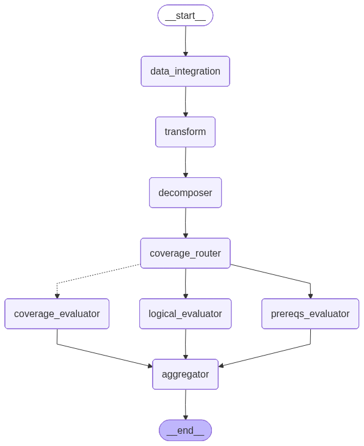

Test Case Reviewer
What it checks & how
Where the RTM reviewer asks "does the suite cover the requirement?",
the Test Case Reviewer zooms in on a single test case and asks
"is this test case well-formed and adequate for the requirement(s) it
traces to?" It evaluates the test case along three independent axes and reduces
them to a 5-row checklist with a binary Yes/No overall_verdict.
It makes its assessment by:
- Decomposing each traced requirement into atomic specs (sequentially, one LLM call per requirement).
- Evaluating, in parallel, three axes: coverage (per spec — does the test case exercise it?), logical structure (test-case-level — do the steps flow sensibly?), and prerequisites (test-case-level — are setup and preconditions clear and sufficient?).
- Aggregating the three axes against the configurable
review-objectives checklist into a
TestCaseAssessment.
Inputs required
The graph state is TCReviewState
test_case_reviewer/core.py. A run needs, per test case:
| Field | Type | Required | Meaning |
|---|---|---|---|
test_case | TestCase | Yes | The single test case under review (id, description, setup, steps, expected results). test_id is the cache partition. |
requirements | List[Requirement] | Yes | One or more requirements the test case traces to. |
design_docs | List[DesignDocument] | Accepted (unused) | Accepted on the state and defaulted to empty by the service, but not consumed by any node or prompt in this reviewer — it does not affect the verdict. (Design context is used by the test-suite and hazard reviewers, not here.) |
cache_mode | "off" | "on" | "test" | Optional | Per-run cache behaviour; defaults to on. Legacy partial/full map to on/test. |
design_docs is currently inert here. Although the field is on TCReviewState and the service passes it through, no test-case-reviewer node reads it and none of its prompts reference design specifications. It is retained as a placeholder aligned with the test-suite and hazard reviewers (which do consume design context).Graph topology

TCReviewerRunnable graph (rendered from the live pipeline).START
-> data_integration -> transform
-> decomposer (sequential over requirements)
-> coverage_router (join barrier)
|-- dispatch_coverage --Send xN--> coverage_evaluator (parallel, per spec)
|-- (direct edge) ---------------> logical_evaluator (test-case-level)
|-- (direct edge) ---------------> prereqs_evaluator (test-case-level)
-> aggregator (reduces all three axes)
-> ENDFrom coverage_router the graph fans out three ways at once: the
coverage axis fans per spec via Send (accumulated by
operator.add), while the logical and prereqs axes are single
test-case-level nodes reached by direct edges. All three converge on the
aggregator. test_case_reviewer/pipeline.py
Nodes & prompts
| Node | Class | Prompt role | Does | Output |
|---|---|---|---|---|
data_integration / transform | DataIntegrationNode / fn | — | Conditional JAMA fetch + map to state (no-ops locally). | state fields |
decomposer | TCDecomposerNode (wraps DecomposerNode) | decomposer | Decomposes each requirement into atomic specs, sequentially. | DecomposedRequirement[] |
coverage_router | lambda | — | Join barrier before the 3-way fan-out. | — |
coverage_evaluator | SingleSpecCoverageNode | single_test_coverage_eval | Per-spec: does this test case exercise the spec? Runs N× in parallel via Send. | SpecAnalysis (accumulated) |
logical_evaluator | OverallLogicalNode | single_test_logical_steps | Test-case-level: do steps follow a logical setup→verification flow? | OverallAnalysis |
prereqs_evaluator | OverallPrereqsNode | single_test_prereqs | Test-case-level: are environment/prerequisites clear and sufficient? | OverallAnalysis |
aggregator | AggregatorNode (final) | single_test_aggregator | Reduces the three axes against the review objectives into the 5-row checklist. is_final_output=True. | TestCaseAssessment |
The three axes
The split reflects what is per-spec vs. test-case-wide:
- Coverage is per spec — a test case may cover some specs and miss others — so it fans out one evaluation per decomposed spec.
- Logical structure and prerequisites are
properties of the whole test case, so each is a single LLM call returning one
OverallAnalysis(no per-spec iteration).
Review objectives (the 5-row checklist)
Embedded directly in the single_test_aggregator prompt (v8 for the
decomposition set, v9 for the no-decomposition set) rather than supplied as graph
input — matching how the test-suite (M1-M5) and hazard (H1-H6) reviewers carry
their rubrics in-prompt. The mandatory flag decides whether a "No" gates
the verdict.
| id | Checks | Mandatory? |
|---|---|---|
expected_result_support | Expected results include sufficient evidence to prove outcomes. | Yes |
expected_result_spec_align | Results reflect all conditions in the requirement. | Yes |
test_case_achieves | Final steps verify the intended outcomes. | Yes |
test_case_logical_sequence | Steps follow a logical flow from setup to verification. | Yes |
test_case_setup_clarity | Environment & prerequisites are clearly documented (repeatable). | No (advisory) |
Verdict logic
The aggregator returns an evaluated_checklist of five
EvaluatedReviewObjective items. overall_verdict is
Yes iff every mandatory objective is "Yes"; the advisory
test_case_setup_clarity never flips it. The assessment also carries
comments and targeted clarification_questions.
test_case_reviewer/core.py
Caching
Interim nodes use the shared ReviewCacheManager, partitioned by
test_id (TEST-* folders). Under partial,
interim nodes are cached and the aggregator always re-runs for a fresh result.
The Test Case Reviewer uses the default prompt configuration and is
not affected by the "Include Edge Case Analysis" toggle.
Output
The endpoint returns a self-contained HTML viewer rendered from
outputs.jsonl, one record per test case, showing the 5-objective
checklist, the per-spec coverage, and the logical/prereqs analyses.